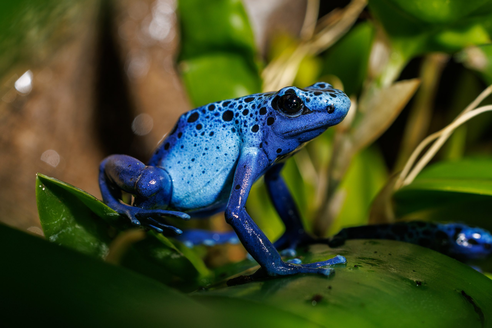
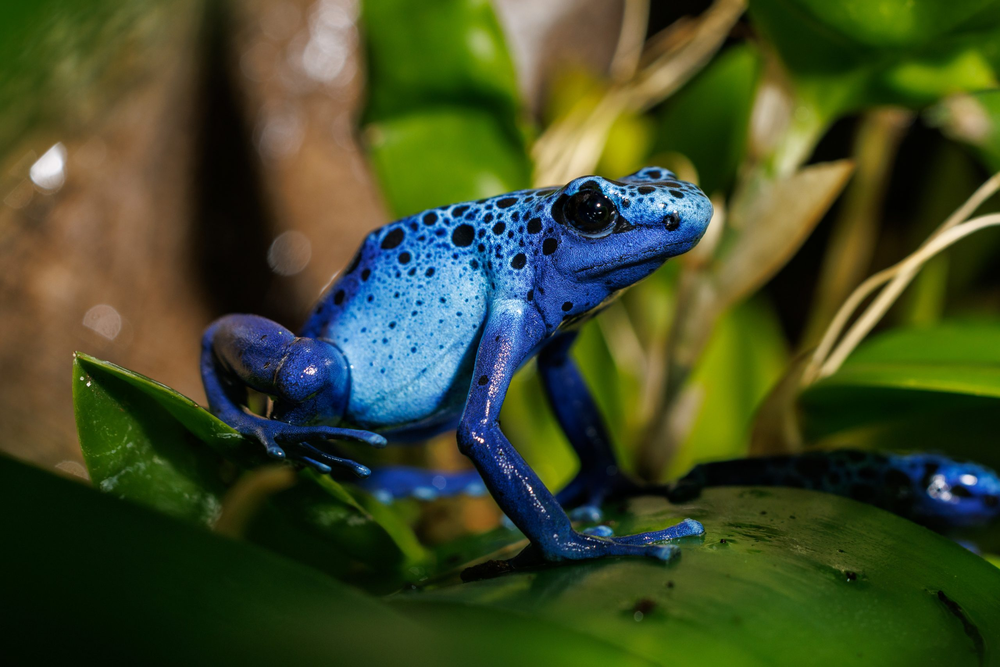

Fun Facts
Here are some fun facts about poisonous frogs. First of all, they are also called dart frogs because of how their body is shaped. Their poison comes from their diet so, in zoos they are less toxic because their deit is controlled.In a zoo these frogs can live up to fifth teen years.Another fact, instead of the females taking care of the eggs the males do. The males will take care of their eggs and onced hatched, they carry the tadpoles to water
 
